Primeros pasos PaPinto
Para desarrollar PaPinto, se ha prescindido de la ayuda de 2 IAs:
- ChatGPT
- Gemini PRO
ChatGPT, se usó para generar un primer prompt para pasarselo a Gemini y así visualizar una primera versión de la aplicación. A continuación, se deja el primer prompt generado por ChatGPT con los requisitos que exigimos:
NECESITO QUE ME HAGAS UN PROMPT PARA GEMINI PARA QUE ME HAGA UNA APLICACION: Hacer una aplicación que muestre información sobre:
Mi pueblo
Mi barrio
Mi Instituto
Guía de coches
Películas o series
Mi país
...
Una especie de guía de viaje, sitios turísticos, restaurantes, deportes, …
Tiene que tener cambio entre modo claro y oscuro.
Se trata de practicar maquetación, apps multipantalla, cards, transiciones, ... TIENE QUE SER RESPONSIVE Y MULTIPLATAFORMA, NECESITO QUE EL LENGUAJE QUE USE PRINCIPLAMENTE SEA HTML, Y YA A PARTIR DE AHI QUE USE JAVASCRIPT, CSS, C++ PARA QUE INCORPORE EFECTOS GUAPOS A LA APP E IMPLEMENTE UNA INTERFAZ MODERNA E INTITUITIVA PARA EL USUARIO
---------------------------------------------------------------------------------------------------------------------
PROMPT:
PROMPT PARA GEMINI:
Objetivo:
Crea una aplicación web multipantalla, responsive y multiplataforma que sirva como una guía interactiva sobre distintos temas (por ejemplo: mi pueblo, mi barrio, mi instituto, guía de coches, películas o series, mi país…).La aplicación debe funcionar como una guía de viaje o cultural, mostrando información, imágenes, lugares turísticos, restaurantes, deportes, eventos, etc.
Requisitos técnicos:
Usa HTML como lenguaje base principal.
Usa CSS y/o JavaScript para el diseño y la interacción.
Puedes usar C++ (mediante WebAssembly o integración indirecta) para agregar efectos visuales avanzados, animaciones o cálculos complejos.
La app debe tener un modo claro y oscuro, con un botón o interruptor que permita cambiar entre ambos.
Debe incluir cards (tarjetas) para mostrar la información de manera visual y atractiva.
Implementa transiciones suaves entre pantallas (por ejemplo, al pasar de “Mi pueblo” a “Mi barrio”, etc.).
Que sea responsive, adaptándose a móviles, tablets y ordenadores.
La interfaz debe ser moderna, intuitiva y estética, con diseño tipo “Material Design” o “Neumorfismo”.
Implementa menú de navegación lateral o superior con las distintas secciones (Mi pueblo, Mi barrio, Mi instituto, Guía de coches, Películas o series, Mi país…).
Añade efectos visuales guapos, como hover animado, sombreado dinámico, y transiciones con CSS o WebGL.
Estructura sugerida:
Pantalla de inicio → presentación con animación de entrada.
Menú principal / barra de navegación → acceso a las diferentes secciones.
Secciones con cards y texto → información sobre lugares, películas, coches, etc.
Modo claro/oscuro → toggle con animación.
Footer → créditos, redes sociales, y derechos de autor.
Extras opcionales (si es posible):
Agrega un buscador interno.
Añade favoritos o marcadores.
Implementa animaciones de entrada y salida con CSS o JavaScript (por ejemplo con GSAP o Framer Motion).
Si se puede, usa iconos SVG animados o de Lucide / FontAwesome.
Entrega esperada:
Código HTML, CSS y JS completo y funcional.
Diseño responsive y multiplataforma.
Interfaz visual y moderna lista para ejecutar en navegador.
Comentarios en el código explicando las partes principales.
🎯 Resumen:
Genera una app web moderna, visual, con cambio de tema claro/oscuro, navegación multipantalla y tarjetas animadas, hecha principalmente en HTML + CSS + JavaScript, con posibilidad de integrar efectos avanzados con C++ o WebAssembly.
---------------------------------------------------------------------------------------------------------------------
APLICACIÓN DE GEMINI - SE ADJUNTAS CAPTURAS DE PANTALLA DE LA PRIMERA APP QUE REALIZÓ GEMINI
{kind=link}
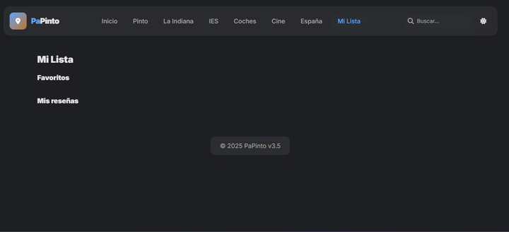
{kind=link}
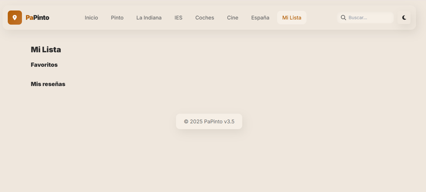
{kind=link}
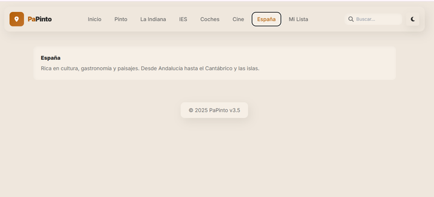
{kind=link}
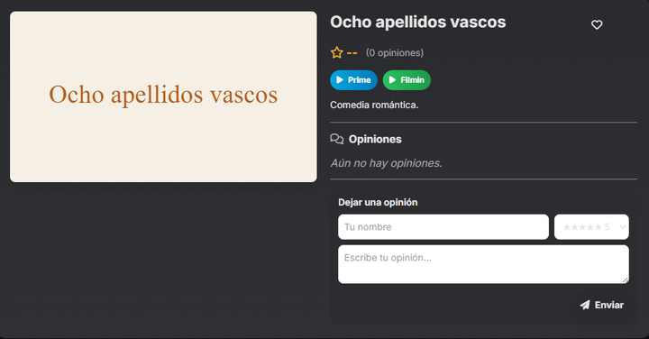
{kind=link}
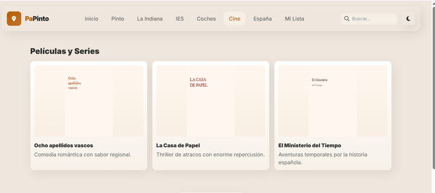
{kind=link}
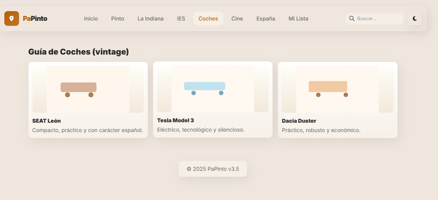
{kind=link}
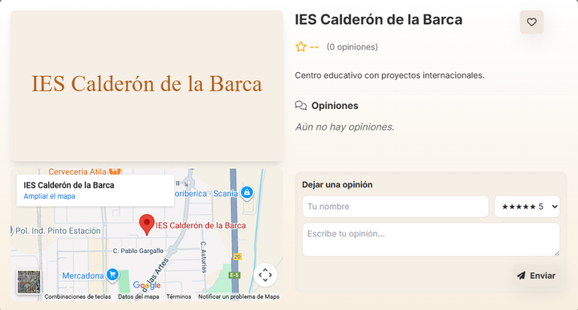
{kind=link}
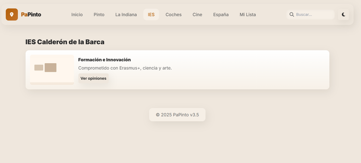
{kind=link}
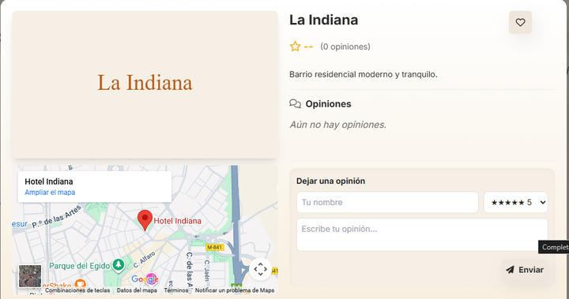
{kind=link}
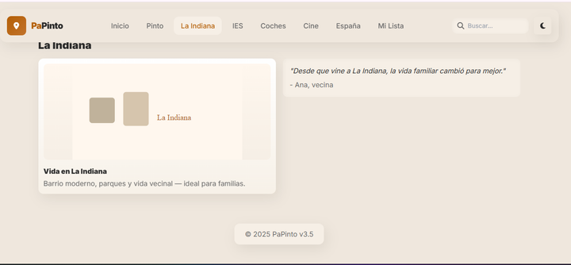
{kind=link}
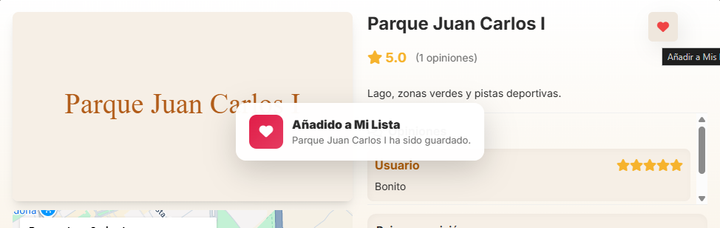
{kind=link}
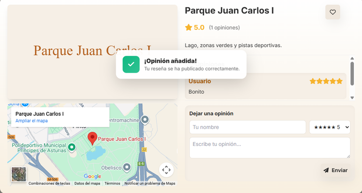
{kind=link}
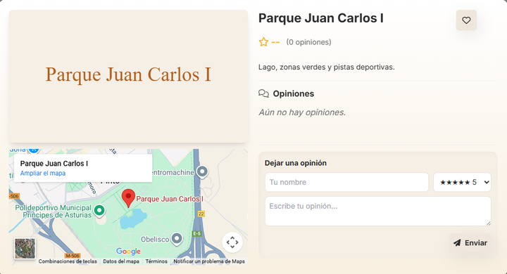
{kind=link}
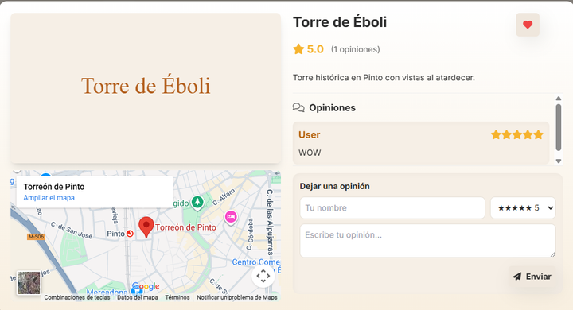
{kind=link}
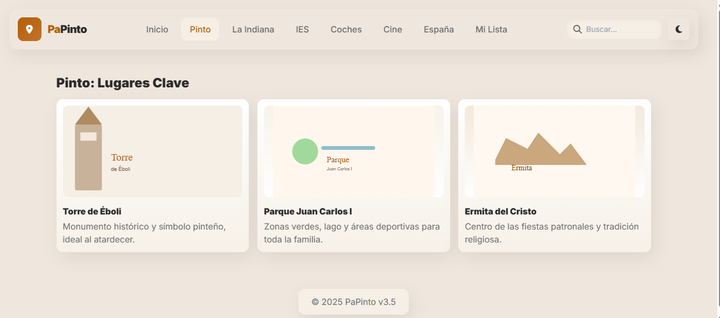
{kind=link}
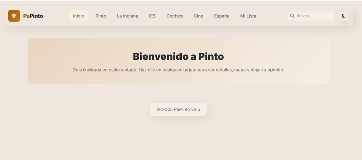
Sentí que faltaban muchas cosas por mejorar como se puede ver, las imágenes, lo ideal serían que se visualizarán fotos de los sitios para que el usuario pudiera apreciar el sitio, y una vez le diera al sitio para obtener una vista más ampliada, seguir mostrando una foto con el contenido que se puede ver en las imágenes. Por otro lado, en la mayoría de las secciones faltaba mucha más información, quería que tuviera cada sección más contenido, pues me imagino que la aplicación no sólo la pueden usar personas locales que quieren saber más de Pinto, sino también para turistas que pueden visitar Pinto no con todo lo que tienen que saber. Y aquí también encontré otro problema, la sección de España, muy escasa la información que no revelaba nada importante para lo que tiene que saber un turista. Además, en la sección Mi Lista, no le posibilita al usuario ver sus favoritos o sus reseñas, así que era otro problema que corregir.
A partir de esta primera versión, obtuvimos otras 5 versiones más.
2ª VERSION
Como se va a poder ver a continuación. Los cambios que incluyó Gemini fueron los siguientes:
- Añadir un filtro (funcional) por sitios en la sección Pinto


- Agregó una nueva sección Itinerarios


- Se arregló el problema que encontrábamos en la sección de Mi Lista


Como vemos ambos botones que se ubicando al lado de los favoritos: Ver y Quitar, funcionan perfectamente.
- También agregó una nueva sección Ajustes
{kind=link}
{kind=link}
{kind=link}
Lo que pasa, es que una vez que borrabas los datos, no te permitía cancelar la operación, directamente te eliminaba los sitios que habías marcado como favoritos y las reseñas que habías puesto. Así que esto era un problema que íbamos a corregir en la siguiente versión.
3ª VERSIÓN
- En la sección Pinto, agregamos más sitios, porque antes me parecían muy pocos sitios para aplicar el filtro de: Todo, Familia, Cultura y Aventura. Quedando de la siguiente manera:

- En la sección Itinerarios, también agregamos un nuevo para 1 semana, un plazo más largo que me pareció otra opción más óptima y más realista.
{kind=link}
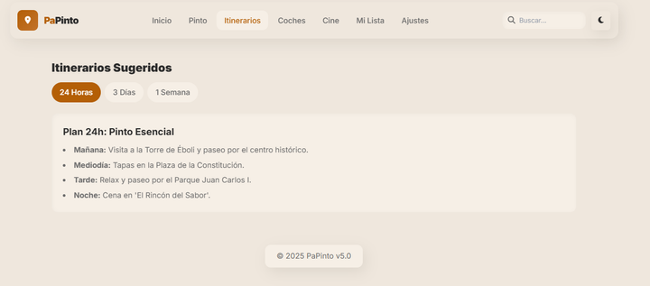
{kind=link}
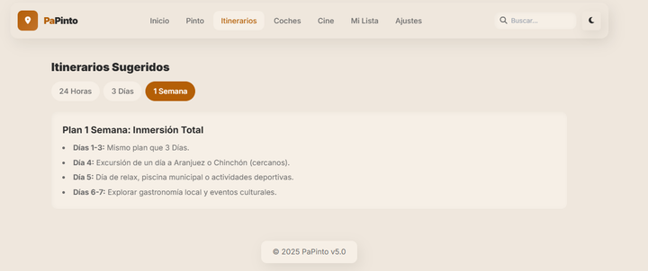
- Así se vería la sección Mi Lista cuando el usuario aún no ha marcado ningún sitio como favorito y no ha escrito ninguna reseña.

- Y el error que antes nos encontrábamos en la sección Ajustes al borrar los datos, se corrigió, quedando así:

4ª VERSION
En esta versión, quería en la sección Inicio, el usuario pudiera configurar su idioma, para que ya desde un principio pudiera navegar en la app en su idioma de preferencia. Quitando por tanto, la opción de configurar el idioma en la última sección Ajustes.
Sección Inicio:

Confirmación exitosa tras configurar los idiomas disponibles:
{kind=link}
{kind=link}
{kind=link}
{kind=link}
Sección Ajustes:

La opción de descargar PDF, es un manual de viaje que se descarga el usuario, pero no me convencía la idea, así que más adelante la quitaremos.
5ª VERSIÓN:
Aquí quería que también en la sección Inicio, el usuario pudiera tener un mapa intercativo en el que indagar, buscar sitios de interés, etc. Además, de poner un efecto al nombre de la aplicación.
{kind=link}
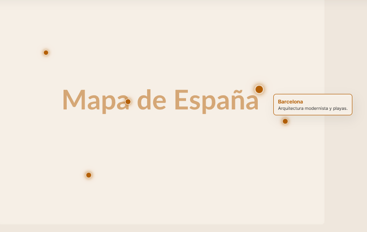
{kind=link}
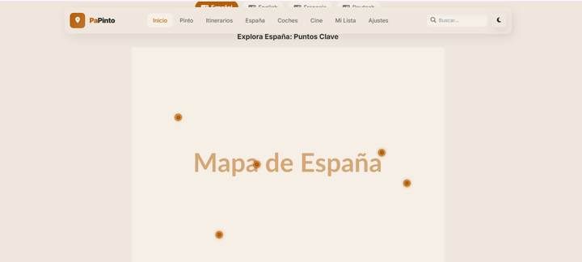
{kind=link}
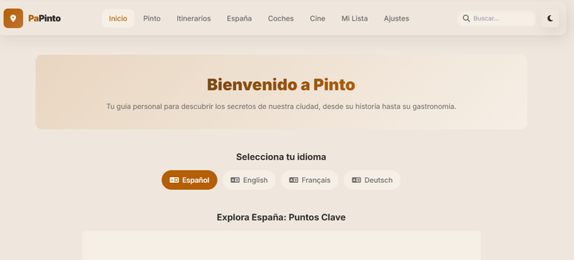
{kind=link}
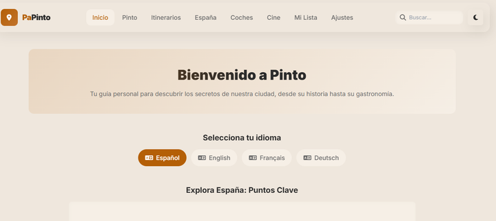
- Luego en la sección España, también se hizó el cambio de poner tarjetas interactivas relacionadas con la gastronomía, las playas y montañas
{kind=link}
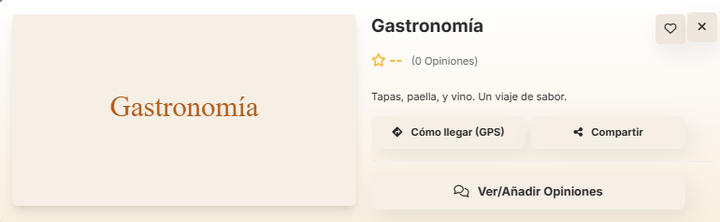
{kind=link}
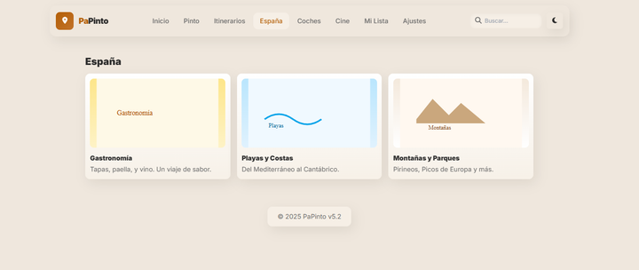
ÚLTIMA VERSIÓN FALLIDA
Querñia seguir implementando más cosas, de las cuales ahora se adjuntan capturas, pero el resultado que me dio, fue inesperado.
Las últimas peticiones que le hice antes de obtener la última versión fallida fueron las siguiente:
1. en la seccion de ajustes en Clima en Tiempo Real quiero que le quites lo de poner tu api key, solamente deja que el usuario pueda seleccionar su ubicacion, tipo, que le aparezca una lista de todas las provincias de españa, y de las localidades tambien.
Mi pensado era que el usuario pudiera seleccionar en una lista el sitio donde se encontraba y así enseñarle como una especie de widget el tiempo que hacía en la zona, sin necesidad de meter una API Key, porque sé que los usuarios no van a saber qué meter, y por tanto, quería hacerlo mucho más simple, como cuando configurar el Tiempo en tu móvil.
2. este es el codigo, y necesito que mejores la seccion España de la aplicacion que te voy a mandar, agregale más elementos que esten más desarrollados, elementos interactivos que ayuden a los turistas a entender la cultura española, a saber tips que necesitan saber, incorpora tambien elementos que ayude a los turistas a organizar sus planes, como una agenda en la que puedan agregar planes.
Aquí se me ocurrió la idea de facilitarle al usuario una especie de bloc de notas en el que pudiera ir apuntando cosas que le resultarán interesantes para luego buscarlos por cuenta propia, o apuntar una ruta personalizada que le gustaría realizar una vez visto los sitios que habían.
Pero ante las peticiones que le hice, me daba error, y me descuadraba toda la aplicación:
{kind=link}
{kind=link}
{kind=link}

Por tanto, se puede decir, que la última versión oficial de PaPinto es la 5ª versión.
Pero esto no fue la aplicación final por la que opté. Sigan leyendo.